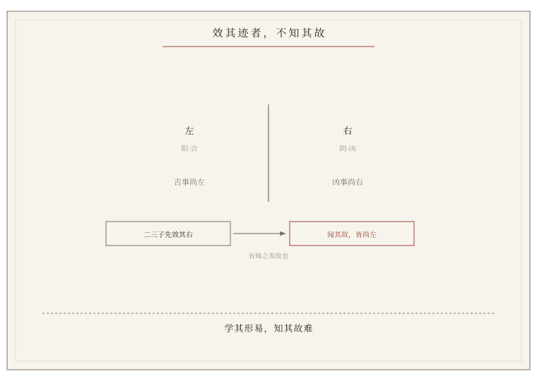

檀弓上 · 三·四十七 · 第 250 课
孔子与门人立，拱而尚右，二三子亦皆尚右。孔子曰：「二三子之嗜学也，我则有姊之丧故也。」二三子皆尚左。注「傚孔子也」「丧尚右，右，阴也；吉尚左，左，阳也」。
说什么事：弟子学老师的姿势，学错了一层——老师那样，是因为有丧。
落在哪一层：礼，兼及礼意。论「效其迹」与「知其故」。
为何编在此位：上节论受馈之序，此节论学礼之失。学礼者最易学其形，最难学其故。
【经】孔子與門人立，拱而尚右，二三子亦皆尚右。孔子曰：「二三子之嗜學也，我則有姊之喪故也。」二三子皆尚左。
【注】傚孔子也。嗜，贪。复正也。丧尚右，右，阴也；吉尚左，左，阳也。
【疏】此一节论拱手之礼。此既凶事尚右，吉事尚左，案《特牲》《少牢》吉祭皆载右胖，《士虞礼》是凶事载左胖者，取义不同。吉祭载右胖者，从地道尊右；《士虞礼》凶祭载左胖者，取其反吉，故《士虞礼》「设洗于西阶西南」，郑注「反吉」是也。
拱 两手合抱于胸前。
尚右 右手在外，以右为尊。凶事之拱。
尚左 左手在外。吉事之拱。
嗜学 注「嗜，贪」。好学之过。
复正 注「复正也」。复吉事之常。
右，阴也 注语。凶事属阴，故尚右。
孔子与门人立着，拱而尚右，几个弟子也都尚右。孔子说：「你们这是贪于学我啊，我是因为有姊之丧，所以这样。」弟子们便都改成尚左。
此节一笑。孔子拱而尚右，弟子不问其故而效之；孔子不说「你们错了」，只说「嗜学」——嗜者贪也，贪于学其形，而不暇问其故。三字之中有喜有责：喜其向善，责其不察。及说出「有姊之丧」，弟子便皆尚左，一句而改，可见其能改；然其初之效，已是学礼者通病。
第一层 尚右与尚左 注以阴阳解：丧尚右，右为阴；吉尚左，左为阳。此非玄谈，是方位之序。凶事退右，吉事进左，礼之左右即人心之向背。
第二层 疏证的旁通 疏举吉祭载右胖、《士虞》载左胖为证，又引《士虞礼》「设洗于西阶西南」郑注「反吉」。此见礼家之法：一义之立，必求数证；数证相合，其义乃固。
第三层 嗜学 注「嗜，贪也」。学礼而贪，则贪其容貌仪节。此病最难医：贪形者自以为知礼，而礼之故已失。
第四层 皆尚左 弟子闻其故即改，一句而返。此见孔子之教不烦：不责其效，只告其故；故明则形自正。
与今日何干 凡学人行事，最易学姿态而不知缘由。此节给的尺是：见人所为，先问其故；不问而效，虽效得极像，也只是尚右。
| 左 | 右 |
|---|---|
| 孔子拱而尚右 | 有姊之丧故也 |
| 二三子亦皆尚右 | 效其迹，不问其故 |
| 嗜学 | 贪于学形 |
| 丧尚右，右为阴 | 凶事之变 |
| 吉尚左，左为阳 | 吉事之常 |
| 二三子皆尚左 | 闻其故即改 |
画一处堂前的庭院，视点平。中央一位老者立着，两手在胸前相拱，右腕压在外；他身后斜站四位年轻弟子（衣整），也都同样拱着，姿势一模一样。老者侧头回望弟子，弟子们目光都在老者手上。庭中一棵树，树下一只空几。不写文字、不画人面细节。赭色只用在老者拱起的右手腕与一位弟子袖口上。
